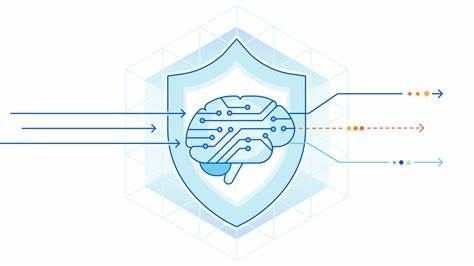

Projetos
Segurança de Internet das Coisas (IOT) no agronegócio
Pesquisa de Segurança Cibernética no Agronegócio Inteligente: uma abordagem segura com uso de aprendizagem de máquina em IoT.
Supply chain no agronegócio com uso de blockchain
Pesquisa de Gestão de extravio de matéria prima da cadeia de suprimentos (supply chain) no agronegócio com uso de blockchain.
WAF aplicado com Machine Learning

Pesquisa de aprimoramento de técnicas de detecção de ataques web no ambiente de Web Firewall (WAF) com uso de aprendizado de máquina.
Desenvolvimento Seguro para pequenas e médias empresas

Pesquisa de desenvolvimento de software seguro para pequena e médias empresas.
Gerenciamento do Laboratório de Linux
Gerenciamento, Monitoramento e Automação do laboratório de Linux da FCI (laboratório 301/302 do prédio 31).
Laboratório virtual de segurança cibernética

Laboratório virtual de segurança cibernética para análise, desenvolvimento e simulação de ataques e vulnerabilidades em ambientes seguros.
DNS ABUSIVO